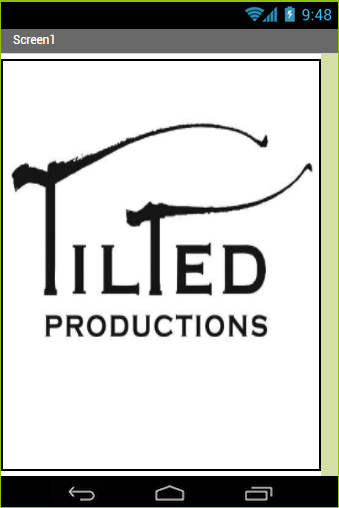

Home
Portfolio
About Me
This is my Portfolio Page!
My partners and I remixed a maze game on Scratch. We changed a few visual items in the maze, such as the walls and ball color.
Using Scratch, my partners and I created a game called Snake. The purpose of the game is to eat the mice and get the longest tail, but you can't touch your own tail. Enjoy the game!
Using MIT App Inventor, my partner and I created a tilt maze app for tablets and phones. The app is only available to play on android devices, using app inventor.
The purpose of this game is to maneuver a ball by tilting the device to get the ball to roll through a maze without touching the walls. If you do end up touching the walls, you are sent back to the starting point.

As our first mini project using python, my partner and I decided to create a virtual reality horro game plot. Plot: You are a journalist named William who goes to explore a Mental Asylum, or get abducted and placed somewhere in a remote jungle (depends on your choice).